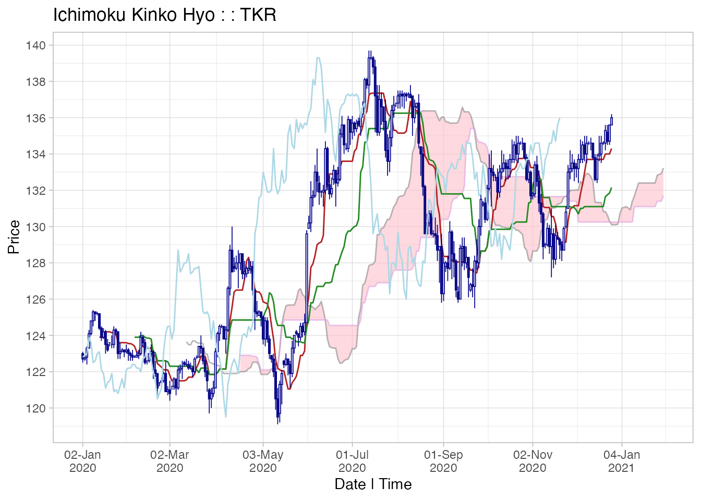
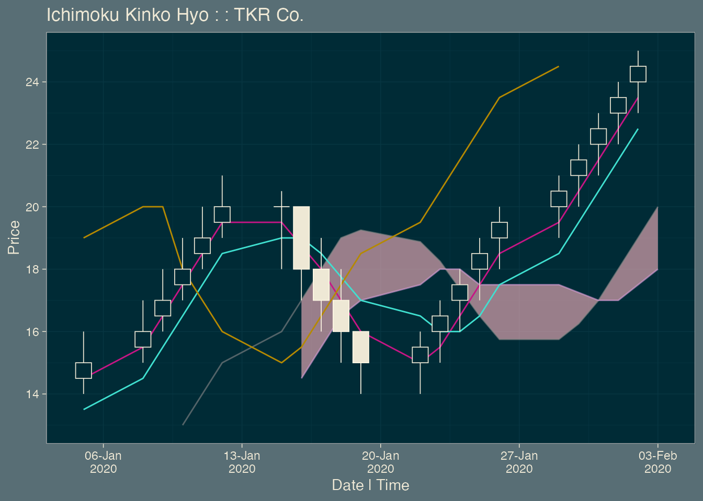

The system consists of the following chart lines added to a candlestick chart:
Tenkan-sen: [conversion line] the mid-point of the highest high and lowest low for the past 9 periods.
Kijun-sen: [base line] the mid-point of the highest high and lowest low for the past 26 periods.
Senkou span A: [leading span A] the mid-point of Tenkan-sen and Kijun-sen plotted ahead 26 periods.
Senkou span B: [leading span B] the mid-point of the highest high and lowest low for the past 52 periods, plotted ahead 26 periods.
Chikou span: [lagging span] the current closing price plotted 26 periods behind.
The kumo [cloud] is the area between Senkou span A and Senkou span B (usually shaded on a chart).
Ichimoku Kinko Hyo translates roughly to ‘one-glance equilibrium chart’. It is designed to allow the price action and market structure of financial securities to be determined ‘at-a-glance’ in a highly visual fashion.
For example in a strongly upwards-trending market, the candlesticks will be above the Tenkan-sen, which will be above the Kijun-sen, which will be above the cloud, and the Chikou span may not have anything above it.
The lines and the cloud represent dynamic support and resistance zones relative to the price candles. Generally the thicker the cloud, the tougher the support/resistance. In our previous example, if the price now reverts downwards, it can expect support first at the Kijun-sen, then the Tenkan-sen and finally the cloud itself.
More subtle interpretations involve the Chikou span in particular and its action in relation to the cloud lines as well as the candles.
It is outside the scope of this vignette to provide a full tutorial on the use of Ichimoku Kinko Hyo.
Ichimoku analysis is the latest evolution in refining candlestick charting techniques, which also originated from Japan in the 18th century. Actually developed during the mid-20th century, it gained popularity especially from the late 1990s onwards, and is now used on trading floors worldwide.
The time periods have traditionally been calculated as 9, 26 and 52 based on manual data analysis performed in Japan in a pre-computer age where there was a 6-day working week resulting in 26 average trading days in a month. Although this bears little relevance to the current day, the use of these time periods has persisted as an ‘industry norm’ or ‘accepted practice’. To use other periods would be meaningless in a sense as everyone uses these parameters and ‘market psychology’ can and often does create its own realities, independent of any fundamentals.
However, there is no reason for the technique not to evolve, and to reflect changing trading realities perhaps other parameters will become more relevant in the collective psychology. For this reason, the length of these periods is allowed to be set by the user. However please do so with a strong sense of caution and note that using other periods invalidates the traditional interpretations of Ichimoku Kinko Hyo.
Finally, the use originated with daily candlesticks, and the most valid interpretation remains for daily data. However, it is equally used today for both shorter intra-day, e.g. 4-hour or hourly, and longer, e.g. weekly or monthly, charts.
ichimoku works with data frames and tabular data, and interfaces well with other R packages providing financial pricing data. The ichimoku() function is able to handle as input ‘xts’, ‘data.frame’, ‘data.table’, ‘tibble’, ‘matrix’ and possibly other ‘data.frame’ compatible objects. For further detail see the section file formats.
# ichimoku is designed to interface well with other packages, for example the following works:
cloud <- ichimoku(quantmod::getSymbols("C"))The requirement on the input data is minimal, but it should contain an unambiguous date-time index and also at least High/Low/Close (HLC) price values for each time period. This is as the calculations of the cloud lines use variously the closing price as well as the midpoint between the highs/lows. It is not possible to calculate the ichimoku cloud correctly using just a single price per time period.
Full Open/High/Low/Close (OHLC) data should be used where available as this also allows accurate plotting of the candlesticks. If only HLC price data is available, ichimoku will take the opening price to be the closing price of the previous period, which may or may not be a good assumption depending on type of security.
# Some synthetic OHLC pricing data is loaded as a data frame 'TKR':
head(TKR)
#> Date Open TKR.High lowprice px_close
#> 1 2020-02-02 143.4 143.6 143.4 143.4
#> 2 2020-02-03 143.4 143.5 142.5 142.7
#> 3 2020-02-04 142.7 143.0 142.2 142.4
#> 4 2020-02-05 142.4 142.7 141.8 141.8
#> 5 2020-02-06 141.8 142.6 141.2 141.3
#> 6 2020-02-07 141.3 143.0 141.1 142.7ichimoku is able to correctly recognise the data in the example above, even though the column headings are far from consistent. For further detail see the section data validation.
Note: always retrieve as much data as possible, or at least slightly further back than the window desired. Call ichimoku() on the full dataset and then susbset the data when plotting to ensure there is a full ichimoku cloud for all of the desired period. This is better than first subsetting the data and then calculating the ichimoku cloud as there will be NAs and hence no cloud at the start given some of the cloud lines need several values to be calculated.
ichimoku() is the main function of the ichimoku package. It takes the input data object and returns an ichimoku object, which inherits the classes ‘ichimoku’ and ‘data.frame’.
The returned object is of a consistent format, with the following 11 columns:
The following attributes are also set:
ichimoku()]
cloud <- ichimoku(TKR)
print(cloud[100:110,], plot = FALSE, row.names = FALSE, digits = 4)
#> date open high low close candle tenkan kijun senkouA senkouB chikou
#> 2020-05-27 150.1 151.9 150.0 151.8 up 148.8 148.8 146.6 146.2 156.2
#> 2020-05-28 151.8 152.3 151.1 151.3 down 149.0 149.0 146.6 146.2 156.4
#> 2020-05-29 151.3 152.2 150.8 152.0 up 149.2 149.0 146.6 146.2 156.8
#> 2020-05-31 152.0 152.3 151.9 152.3 up 149.6 149.0 147.6 146.6 157.2
#> 2020-06-01 152.3 152.4 151.1 151.3 down 150.4 149.1 147.6 146.6 158.2
#> 2020-06-02 151.3 152.1 151.3 151.5 up 150.7 149.1 147.6 146.6 159.4
#> 2020-06-03 151.5 151.7 150.5 151.6 up 150.7 149.1 147.6 146.6 158.8
#> 2020-06-04 151.6 151.9 151.3 151.7 up 150.7 149.1 147.6 146.6 158.9
#> 2020-06-05 151.7 152.8 151.6 152.0 up 151.4 149.2 147.6 146.8 160.6
#> 2020-06-07 152.0 152.2 151.9 152.1 up 151.7 149.2 147.7 146.8 160.7
#> 2020-06-08 152.1 152.5 151.6 152.2 up 151.7 149.2 147.7 146.8 161.8A section (rows 100 to 110) of the cloud object is shown above. Note that print is called setting ‘plot = FALSE’ to return the data frame without the plot.
ichimoku objects employ a custom S3 print method which by default plots the cloud chart in the graphical device as well as returning the dataframe to the console. As ichimoku is primarily a visual charting technique, this is almost always the desired outcome.
# to view data as well as chart, simply issue:
cloudNote: in assignment operations, where the output of ichimoku() is assigned to an object, the behaviour is quiet and nothing is printed (or plotted), as is the usual practice in R.
ichimoku() may also be used on an ichimoku object to re-set its ticker to a new value, but will otherwise just invoke its print() method without re-calculating the cloud values.
As an ichimoku object fully inherits the ‘data.frame’ class, all the existing methods for data frames should work seamlessly.
ichimoku offers the choice of 2 plotting systems: static (default) and interactive.
The default produces publication-ready static plots, which have the advantage of being easily exportable to pdf or image formats in high resolution.
ichimoku implements a custom S3 method for ggplot2’s autoplot() function for objects of class ‘ichimoku’. Although autoplot can be called directly on an ichimoku object, it is practically always better to call plot() instead as it is not only more convenient to type, but also able to mute most of ggplot2’s verbose messaging.
plot(cloud)
As the implementation is via ggplot2, the user is able to further amend or customise the resulting plot using any ggplot2 methods. The easiest way to do this would be to assign the output of plot() to an object, which will inherit the classes ‘gg’ and ‘ggplot’. Further elements or layers can then easily be added or amended using ggplot2’s + and %+replace% operators.
# The following would work if you wanted to add/replace ggplot2 layers:
plot <- plot(cloud)
plot + ggplot2::theme_classic()To use fully-interactive charts, the ‘plotly’ package must first be installed. If ‘plotly’ is not available, ichimoku will fall back to a static chart and issue a message, but not automatically install it for you. In this way, interactive charting is a fully optional part of the package as we recognise that ‘plotly’ may not be available in all environments.
To produce an interactive plot, it is possible simply to supply an argument i = TRUE to the plot() function. The interactive plot will be almost identical in format to the equivalent static plot.
Alternatively, directly call ichimoku’s iplot() function, which is (marginally) faster to type and possibly easier to remember. Calling iplot() will prove more reliable over time than having to remember to set a parameter for each plot.
# For interactive charting, take your pick of:
iplot(cloud)
# which is equivalent to:
plot(cloud, i = TRUE)
# which is also equivalent to, using argument position matching and abbreviation of TRUE:
plot(cloud, T)In a live analysis environment, as opposed to creating charts for reports, it is usually always preferable to work with interactive plots. This is simply due to the ease of use of being able to directly manipulate the chart:
A plot with default parameters is shown above, but the plot functions contain built-in customisations to allow for most envisioned use cases. The example below demonstrates the arguments that can be supplied to customise the plot.
plot(cloud, from = "2020-05-01", to = "2020-10-03", ticker = "TKR Co.", theme = "dark", gaps = TRUE)
The same arguments are used across plot() and iplot() functions:
ichimoku() is run on a larger dataset than that of interest and then at the plotting stage, the data can be subset to the window of interestichimoku() is a generic function that provides S3 methods for objects of class ‘xts’, ‘data.frame’ and ‘matrix’. Other popular formats such as ‘data.table’ and ‘tibble’ also inherit the class ‘data.frame’ and hence also work with ichimoku().
ichimoku has been designed to be fully pipeable and interfaces well with popular packages that return financial data from the internet. For example, the getSymbols() function from the ‘quantmod’ package exhibits non-standard R behaviour which assigns the data into an object but returns a text string containing the name of the object. ichimoku handles such behaviour automatically such that the following works, allowing us to get from zero to a chart without the need to save intermediate objects:
For reading external raw data into R, if the file uses some form of custom delimited format, the fread() function on default settings from the ‘data.table’ package is often successful. Alternatively, the ‘datapasta’ package allows data copied from tables on webpages or in spreadsheets etc. to be pasted into R as a data frame. After importing data, please check that the date-time index is in an unambiguous format (ideally POSIXct), and that the pricing data is of type ‘numeric’ and not ‘character’.
ichimoku performs the following data validation steps before attempting to compute the cloud values. Failure at any step causes ichimoku() to halt.
Searches for HLC price data in columns with names containing ‘High’, ‘Low’ and ‘Close’ (not case-dependent) respectively.
Searches for opening price data in a column with name containing ‘Open’ (not case-dependent).
There may be other issues with the input data that prevent the cloud values from being computed, not handled explicitly by ichimoku(). For example:
Please ensure the relevant data columns are appropriately labelled before invoking ichimoku().
The dependency on other packages is designed to be minimised to the extent possible. This package has the following package dependencies:
Optional dependency:
Package website: https://shikokuchuo.net/ichimoku/
The most recent version of the package may be found at https://github.com/shikokuchuo/ichimoku/